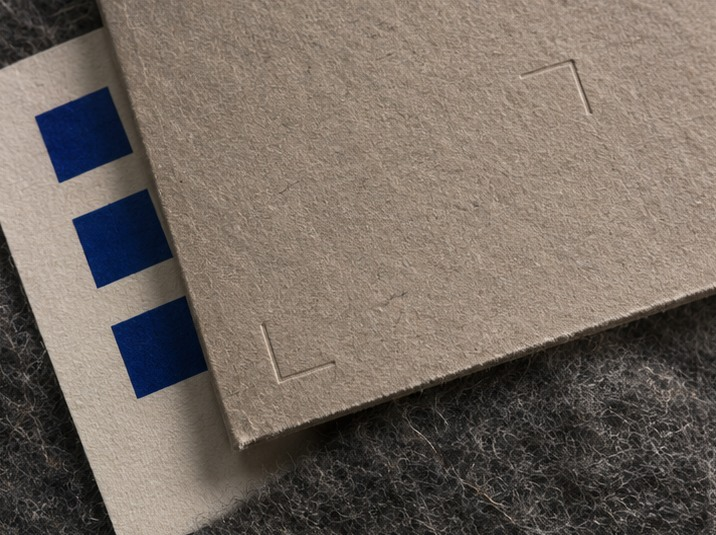
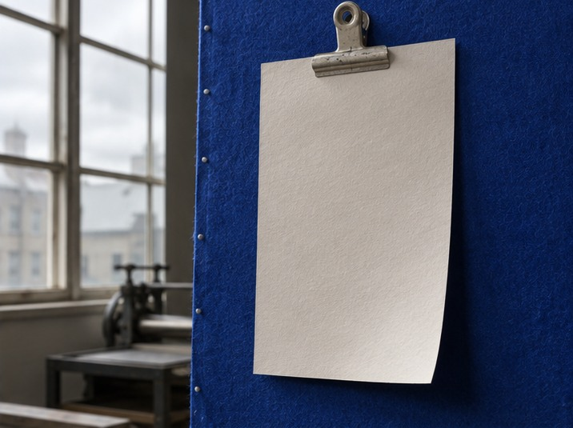
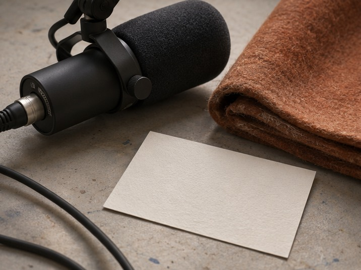
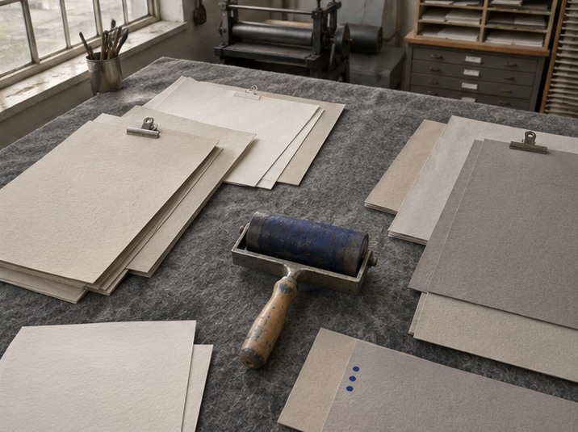
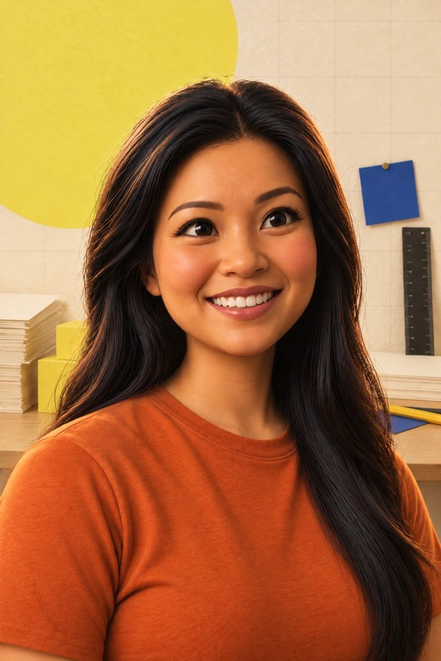

Treatment B / Identity study
The Working Edition
Good work has a byline.
Give the work a byline. Make the person or agent who acted, the group that owns the work, and the authority for the action visible at the point of use.


Good work has a byline.
Give the work a byline. Make the person or agent who acted, the group that owns the work, and the authority for the action visible at the point of use.

Lead with work a team already understands. Show a person giving an agent a brief, an outcome the group can pick up, and a clear place to find its context. The emotional promise is the relief of knowing where the work stands, who is accountable and how to pick it up.
Bring humans and agents into the same workflow. Keep the decisions, sources and next steps with the team doing the work.
Shared names the team experience. 2lp names the runtime underneath it. A node is where an agent runs, and seats provide working capacity. Explain those terms in setup and administration, where placement and access matter. Introduce Lola's own node and the dedicated seats for Matt's team as the concrete example.
Matt and Rafa lead advocacy and training. Use one everyday handoff to teach the model. A participant should be able to name an agent's role, identify the group that can see the handoff and find the source when they return. Use a training group and sample material for the exercise.
The imprint is a small, consistent metadata block attached to consequential work. Put the actor, group, source and time next to the item when the product has those values. Keep the agent label explicit beside the actor. Show the group as text and lead with it in access settings.

Use the group name as the first line of a permission surface. List people and agents in one roster with explicit identity types and named permissions. When a product surface supports a change to access, preview the exact group, recipient and scope before confirmation.

Present shared memory as entries owned by the group. Keep the content summary, source, author and date attached to each entry. Where attribution is established, distinguish who made a decision from who recorded it so a returning teammate can check the source.
Use uncoated paper, felt and hand-worn aluminium to move the brand into the physical world. Lay out pages with big margins, a single cobalt rule and one image or object placed with purpose. Reserve felt for a backdrop, binding or surface under an object. Keep reading panels smooth for text clarity.



Build a contact sheet around objects that suggest a working gesture. A clipped sheet evokes filing, a pinned sheet evokes presenting and a microphone evokes the podcast. Set the commissioned colour portraits beside the prop studies and keep the gestures in the still lifes implicit.
Use Lola’s commissioned portrait with the turquoise knit, upward glance and warm studio light intact. She runs on her own node with dedicated seats for Matt’s team. Put the portrait next to the embossed cover and anchor both with an imprint that gives her role and group.
Use Juan’s commissioned portrait with its orange shirt and rightward gaze facing the pinned sheet. A single shared slide is the concrete Rooms story. Juan Live and WhatsApp are distinct channels that use the same identity. Name the current channel and verify any handoff offered between channels.
Milo runs the AI Engineers Barcelona podcast. Set his commissioned green-shirt portrait beside the microphone still life. On an episode asset, give the show name and episode title more space than the Shared identity and set Milo’s host credit as a byline.
Use Nando’s commissioned portrait at the same scale and with the same label as the other agents. Pair it with clipped sheets arranged so the handoff reads across the page. Credit the people and agents whose participation is documented.

Paper is the reading field. Ink carries text and structure. Cobalt denotes links, focus and primary actions. Clay marks editorial accents and can support an exception with a written status and a clear next action. On solid Paper the contrast ratios are approximately 13.74:1 for Ink, 7.34:1 for Cobalt and 6.08:1 for Clay.
Use Instrument Sans for the wordmark, large headlines, interfaces and reading text. Use IBM Plex Mono sparingly for short identifiers, dates and imprint labels. Set long entries in the sans, limit explanatory prose to roughly 65 characters per line and preserve real heading levels in digital layouts.
Meet the team.
Instrument Sans / 0123456789Draw a tightly set Shared wordmark and a companion symbol made from two offset rectangular sheet corners held by a single square registration dot. Draw flat, one-colour vectors. Retain a one-cap-height clear zone on the lockup and use the simplified symbol when the wordmark would fall below 80 px. Use the commissioned portrait files at their native proportions for large modules and check tight avatar crops against the originals.
Use short sentences with a named actor and a concrete verb. Say when an agent is offering a draft, when access is under review and when a change is confirmed. Make the useful next action a verb the reader can see on screen. Localize by natural sentence structure and carry the same actor, scope and state into the translation.
Draft copy specimen
Put status in the header of a room, task or memory entry, beside the action it affects. Use familiar state words and include an icon or text alongside colour. Give keyboard focus a two-pixel Cobalt outline with a two-pixel offset. If the state is uncertain, say what people can still do and use any last-checked time the system can substantiate.
Use motion to show where content went or what changed. When a room adds a slide, keep the surrounding layout stable and resolve the slide into the content area with one easing curve. Status changes should have a persistent text equivalent and be announced once where appropriate. Support reduced motion with immediate placement.
Have Matt and Rafa run the handoff exercise using authorized examples. Apply the brand first to the welcome, agent roster and Rooms guidance, then align campaign and podcast assets. Review onboarding with one new participant and one returning teammate. Verify every depicted channel, status and access control on the surface where it appears before publishing. Keep concepts visibly labeled in the study.
Keep the original image, name and identifying details together. A portrait identifies a character. Current responsibilities belong in the accompanying copy.


Keep the original image, name and identifying details together. A portrait identifies a character. Current responsibilities belong in the accompanying copy.


Treat the attribution as a byline. Keep group and source in the imprint directly below the item.